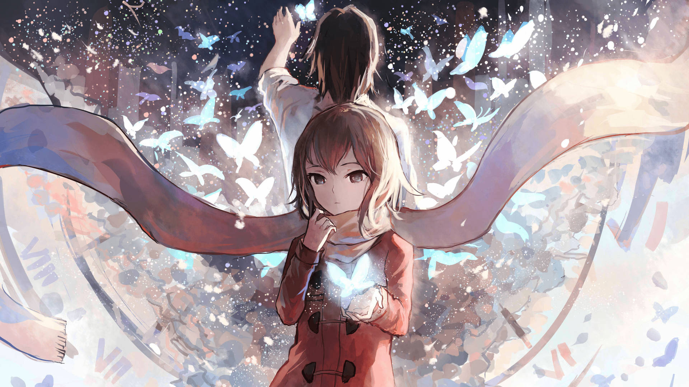
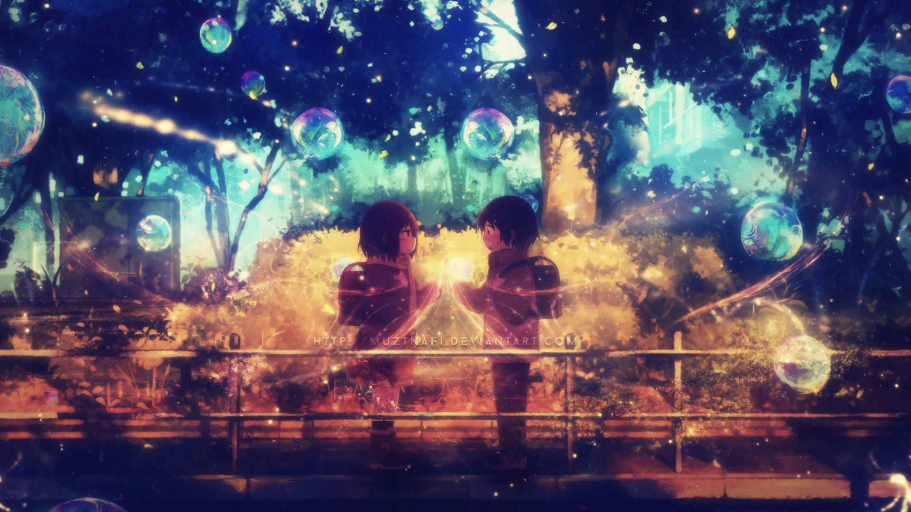
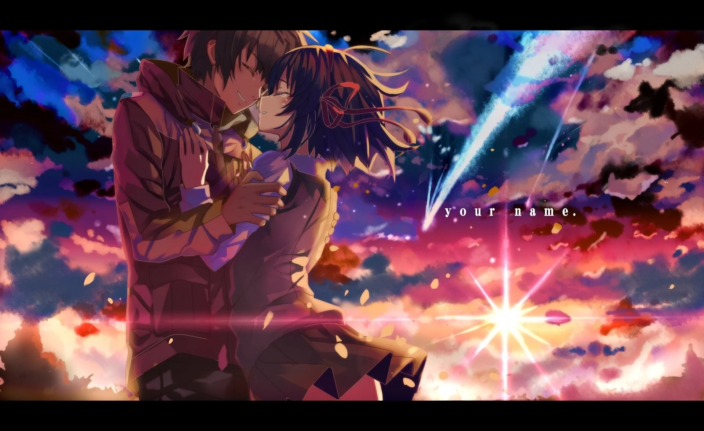
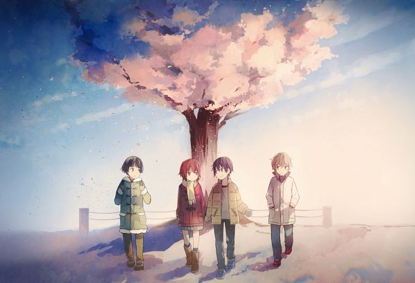
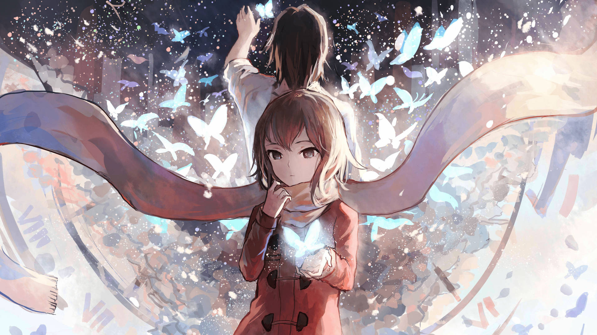
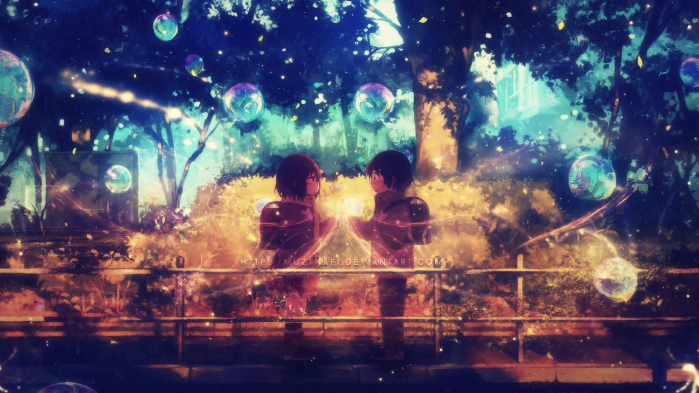
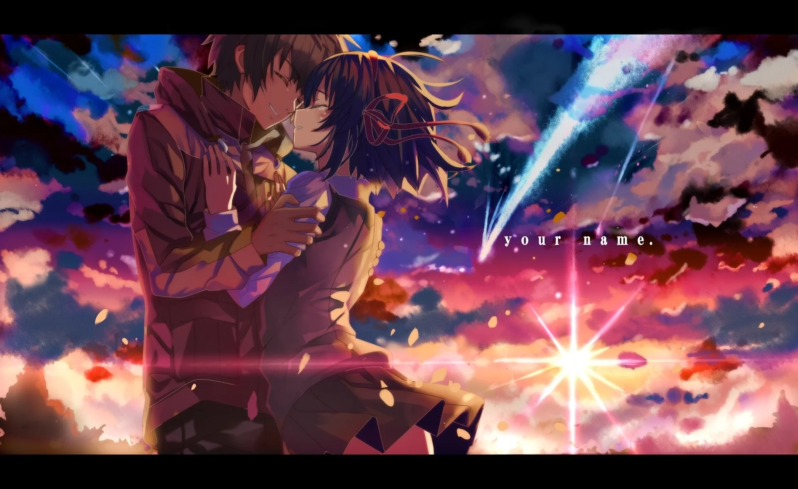
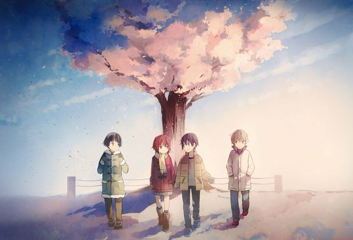

Erased

| Estudio | A-1 Pictures |
| Fecha de lanzamiento | 2016 |
| Temporadas | 1 |
| Episodios | 12 |
| Valoracion IMDB | 8,5/10 |

Sinopsis
Satoru Fujinuma es un autor de manga frustrado que trabaja como repartidor de pizzas para llegar a final de mes. Lo que no sabe nadie es que posee un don excepcional: cada vez que tiene lugar alguna tragedia cerca de él es proyectado unos minutos hacia atrás en el tiempo para tratar de impedirla. Precisamente, uno de estos episodios hace aflorar los recuerdos reprimidos de su infancia traumática, lo que acaba teniendo consecuencias demoledoras y trágicas en su presente. Una vez más, sufre una de sus regresiones, solo que esta vez lo lleva hasta el año 1988, justo antes de que su compañera de clase Kayo Hinazuki se convirtiera en la primera víctima de un secuestrador en serie.
 






